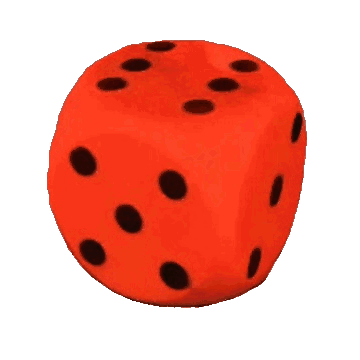
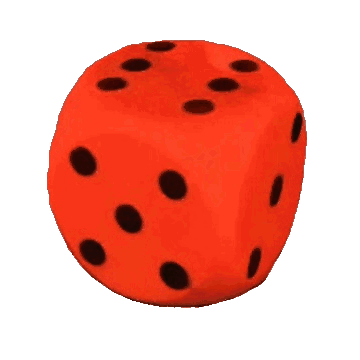

Advancing robotic manipulation of deformable objects can enable automation of repetitive tasks across multiple industries, from food processing to textiles and healthcare. Yet robots struggle with the high dimensionality of deformable objects and their complex dynamics. While data-driven methods have shown potential for solving manipulation tasks, their application in the domain of deformable objects has been constrained by the lack of data. To address this, we propose PokeFlex, a pilot dataset featuring real-world 3D mesh data of actively deformed objects, together with the corresponding forces applied by a robotic arm, using a simple poking strategy. Deformations are captured with a professional volumetric capture system that allows for complete 360-degree reconstruction. The PokeFlex dataset consists of five deformable objects with varying stiffness and shapes. Additionally, we leverage the PokeFlex dataset to train a vision model for online 3D mesh reconstruction from a single image and a template mesh. We refer readers to the supplementary material for demos and examples of our dataset.
@article{authors,
author = {Obrist, Jan and Zamora, Miguel and Zheng, Hehui and Zarate, Juan and Katzschmann, Robert K. and Coros, Stelian},
title = {PokeFlex: Towards a Real-World Dataset of Deformable Objects for Robotic Manipulation},
journal = {Extended Abstract, 40th Anniversary of the IEEE International Conference on Robotics and Automation. (ICRA@40 Rotterdam 2024)},
year = {2024}
}